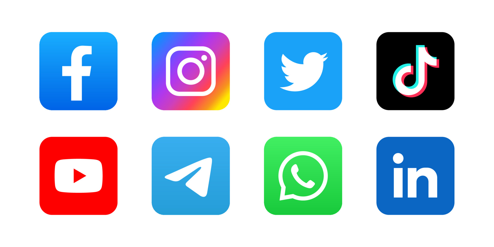

Comment encadrer la liberté d’expression sur les réseaux sociaux ?
Introduction
Les réseaux sociaux sont un moyen de s’exprimer et de donner son avis plus facilement et anonymement. Il y a plusieurs moyens de s’exprimer : en publiant des photos, vidéos, en commentant sous un post… Il y a des paramètres de confidentialité qui permettent de choisir son public (amis, abonnés, tout le monde…). Cela nous amène à nous demander : Comment la liberté d’expression est-elle encadrée sur les réseaux sociaux ? Tout d’abord nous allons voir pourquoi il faut encadrer la liberté d'expression, puis nous allons nous intéresser au cadre législatif et enfin au cadre technique.

1. Pourquoi faut-il encadrer la liberté d’expression ?
A. Un droit fondamental
La liberté d'expression est un droit fondamental, défini et garanti par la loi. Il s'agit de la liberté d'exprimer son opinion, sa pensée par tous les moyens, la presse, l'art, l'écriture, la parole, la manifestation, la réunion, l'association. Pour garder cette liberté, il est important de l’encadrer, en particulier sur les réseaux sociaux.

B. Limiter les dérives
Il est important d’encadrer la liberté d’expression pour limiter les dérives. En effet, sur les réseaux sociaux, il y a des personnes qui peuvent se servir de la liberté d’expression pour diffuser des propos racistes, sexistes, homophobes, antisémites, etc. Le risque de cyberharcèlement peut aussi être largement diminué en encadrant la liberté d’expression. Des personnes peuvent aussi se servir de la liberté d’expression pour manipuler l’opinion publique comme nous l’avons vu lors les élections américaines de 2016 où Donald Trump a utilisé les réseaux sociaux pour manipuler l’opinion publique. Source : www.conseil-constitutionnel.fr. Les Fake News sont aussi un bon exemple de dérives de la liberté d’expression.
2. Un cadre législatif
A. Par les Etats
Aux États-Unis, le 1er amendement de la Constitution garantit la liberté d'expression et de parole. Cependant, les dispositions de cet amendement ne garantissent qu'une protection de la liberté d'expression contre l'action de l’État et ne s'appliquent pas aux acteurs privés tels que les réseaux sociaux.
La Convention Européenne des Droits de l'Homme, ratifiée par tous les Etats de l'Union Européenne définit à l'article 10 le droit à la liberté d'expression : “Toute personne a droit à la liberté d'expression […] sans qu'il puisse y avoir ingérence d'autorités publiques”. Par construction, cette définition est opposable aux autorités publiques mais pas aux entités privées.
B. Par les réseaux sociaux
Le cadre est la plupart du temps défini par les réseaux sociaux eux-mêmes à travers les CGU1. Les CGU sont des textes qui encadrent les règles d’utilisation d’un site et déterminent les droits ainsi que les obligations des utilisateurs et de l’éditeur. Les CGU de Meta2 nous montrent bien les règles que fixe le réseau social :
Issu des CGU de Meta : Ce que vous pouvez partager et faire sur les Produits Meta Nous voulons que les gens utilisent les Produits Meta pour s’exprimer et partager du contenu qui leur importe, mais pas au détriment de la sécurité et du bien-être des autres ou de l’intégrité de notre communauté. Vous acceptez donc de ne pas agir de la manière décrite ci-dessous : Vous ne pouvez pas utiliser nos Produits pour faire ou partager quoi que ce soit : qui enfreint les présentes Conditions, les Standards de la communauté et les autres conditions et politiques applicables à votre utilisation de nos Produits ; qui est illégal, trompeur, discriminatoire ou frauduleux (ou qui aide quelqu’un d’autre à utiliser nos Produits de cette manière) ; qui ne vous appartient pas ou pour lequel vous ne disposez pas des droits de partage nécessaires ; qui enfreint ou viole les droits d’autrui, y compris ses droits de propriété intellectuelle Nous pouvons supprimer ou bloquer le contenu qui enfreint ces dispositions. Nous pouvons également suspendre ou désactiver votre compte en cas de non-respect de ces dispositions. Pour nous aider à soutenir notre communauté, nous vous encourageons à signaler tout contenu ou comportement qui, selon vous, enfreint vos droits ou nos conditions et politiques, s’il est possible de le faire dans votre juridiction.
Ce sont les plateformes qui font la loi, elles peuvent donc supprimer ou bloquer le contenu qui enfreint ces dispositions.
Issu des CGU de Meta : Nous pouvons également supprimer ou limiter l’accès au contenu, aux services ou aux informations si nous estimons que cela s’avère raisonnablement nécessaire pour éviter ou atténuer l’utilisation détournée de nos services ou les effets juridiques ou réglementaires négatifs sur Meta.
3. Le cadre technique
A. La modération
La modération est un moyen d’encadrer la liberté d’expression sur les réseaux sociaux. Elle consiste à supprimer ou à censurer les contenus qui ne respectent pas les règles de la plateforme définies par les CGU. Elle peut être effectuée de façon communautaire, par les utilisateurs eux-mêmes en signalant des contenus (posts, commentaires, photos, vidéos…) pour différents motifs tels que la violence, le harcèlement, la pornographie, le racisme, le terrorisme, la propagande, le spam, la haine ... Lorsque le contenu est signalé un certain nombre de fois, il peut être supprimé.
Issu des CGU de Meta : Lorsqu’un contenu est signalé à Facebook, nous l’examinons et nous prenons des mesures sur tout ce qui, selon nous, enfreint nos Standards de la communauté.
Mais elle peut aussi être effectuée par des algorithmes de détection.
B. L'exemple de la Chine
Le public chinois se rassemble sur un ensemble complètement différent de réseaux sociaux comme le montre ce graphique :
La Chine est un pays qui a mis en place un cadre législatif et technique pour encadrer la liberté d’expression sur les réseaux sociaux. L’Internet chinois est encadré de façon drastique par un système complexe de censure (« la Grande Muraille électronique ») qui bloque notamment les réseaux sociaux Facebook et Twitter, ainsi que YouTube et Google. Les plates-formes chinoises comme Weibo ou WeChat font par ailleurs l’objet d’une censure étroite, tout en étant censées réguler elles-mêmes les contenus de leurs utilisateurs. Dans le viseur des censeurs, Weibo est habitué de longue date à bannir les mots-clés jugés sensibles et nettoie ses plates-formes des interventions contrevenant à la ligne du Parti communiste au pouvoir.
Conclusion
Les réseaux sociaux sont des outils qui permettent de s’exprimer librement, mais ils sont aussi des outils qui peuvent être utilisés pour censurer les opinions divergentes. Il est actuellement très difficile de définir un cadre légal et technique pour encadrer la liberté d’expression sur les réseaux sociaux, ils sont des outils qui évoluent très rapidement et qui sont très complexes. Mais dans un futur proche grace aux avancées de l'intelligence artificielle il sera possible de modérer les contenus de façon plus efficace et plus rapide. L'IA3 Perspective de Google est un exemple de ce que pourrait être l'avenir de la modération des contenus sur les réseaux sociaux. Elle est déjà capable de détecter les commentaires haineux et de les supprimer automatiquement. Mais L'encadrement doit aussi être une preoccupation de la part des propriétaires des réseaux sociaux, car en absence de lois contraignantes, ils sont les seuls à pouvoir décider de ce qui est autorisé ou non sur leurs plateformes.
Retour personnel Damien
Ce dossier documentaire m'a permis de comprendre l'importance de la liberté d'expression sur les réseaux sociaux, mais aussi de comprendre les enjeux. De plus, travailler en groupe en se répartissant les tâches n'est pas simple, mais cela permet de mieux comprendre les différents points de vue et de mieux appréhender le sujet.
Retour personnel Claudia
Cette expérience à plusieurs points positifs car il favorise les échanges par groupes donc cela permet d’avoir des points de vue totalement différents et il faut donc trouver un juste milieu. Cependant ce travail n’était pas gagné d’avance car il y a beaucoup d’informations à citer et de nombreux chiffres, diagrammes, lois ... on a donc dû faire un tri et garder le plus important.
Retour personnel Charline
J’ai trouvé cette recherche intéressante, cette problématique est un sujet d’actualité qui nous fait réfléchir sur l’encadrement de la liberté d’expression sur les réseaux sociaux. On peut constater que ce n’est pas toujours simple de s’exprimer en toute liberté car il faut faire attention à son langage et aux gens à qui on s’adresse pour ne pas les influencer ou rentrer dans des conflits. Cependant, cette liberté d’expression peut amener a dû cyber harcèlement si la personne en face nous force a avoir le même opinion. Je pense que c’est important d’encadrer cette liberté d’expression sur les réseaux car cela permet de sécuriser la parole et les idées de chacun sur ce qu’on pense.